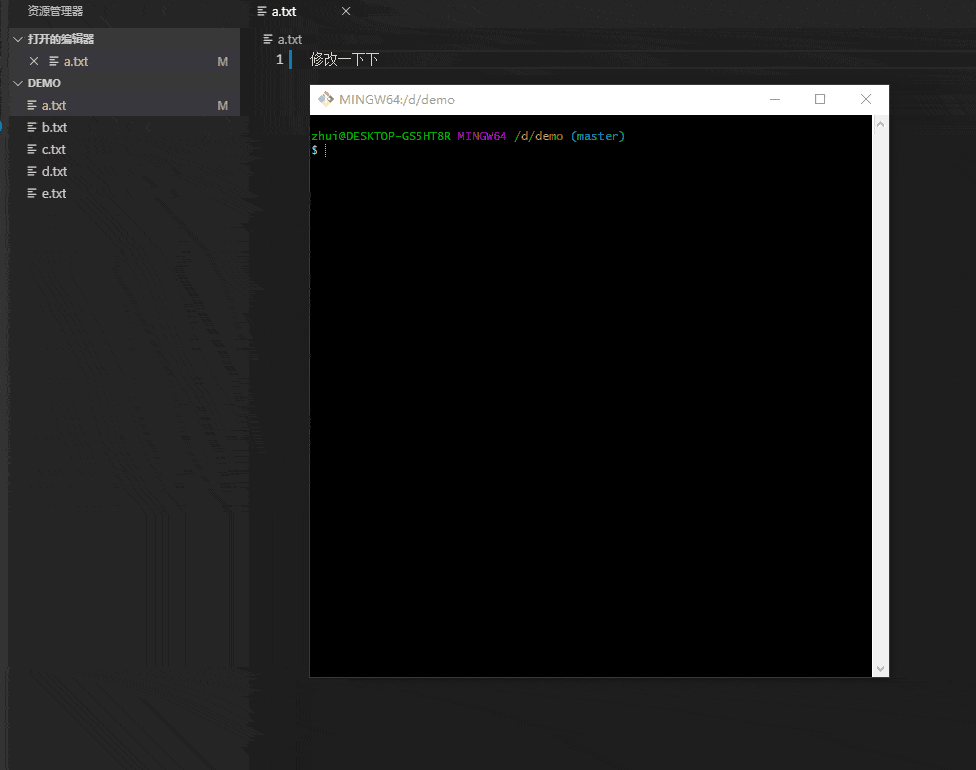

Git的基本配置和使用(一)
写在前面
这篇文章，作为自己梳理 Git 最最最常用的一些指令和知识点，相对于之前写过的 Git 小记而言，这篇文章更基础，也更详细。
Git 简介与安装
Git 是目前世界上最先进的分布式版本控制系统。
在 git-scm.com 下载适合自己系统的 git-bash软件，照着官方说明安装即可。
Git 的两个核心概念
三个区域：工作区、暂存区、仓库。
文件的生命周期
Git 配置
Git 最主要的配置就是配置一个用户名和一个邮箱，而其他一些配置主要用于辅助配置。
git config --global user.name myEnglishName
git config --global user.email myEmail
git config --global push.default simple
git config --global core.quotepath false
git config --global core.editor "code --wait"
git config --global core.autocrlf input注意：
- 用户名和邮箱最好不要输入中文，最好不要存在空格。
- 第三行配置，跟 push 操作相关。
- 第四到第六行配置，跟代码编辑器相关， code 表示的意思是 vscode 编辑器， 需要安装 vscode 并配置 PATH（Windows环境）。git-bash软件默认自带的编辑器叫做 vim(比较难学)。
Git 本地仓库使用
Git 既然是一个分布式版本控制系统，那么肯定有本地仓库和远程仓库，他们之间存在某些联系。
这里先记录 Git 的本地仓库的基本使用指令。
初始化
在一个文件夹内，初始化本地仓库。
git init添加到暂存区。
将某个发生变化的文件添加到暂存区、将某些发生变化的文件提交到暂存区、将所有发生变化的文件提交到暂存区。
git add a.txt
git add b.txt c.txt
git add .查询当前状态。
git status添加到仓库
将暂存区的文件，添加到本地仓库，并说明。
git commit -m '第一次提交 a b c d e 文件'上面的指令执行的是一种简写的提交说明，说明文件需要用 单（或双）引号包裹起来。如果需要更详细的的说明，可以直接使用 git commit 或者 git commit -v。
git-bash 软件默认的是 vim 编辑器，但由于上面进行来配置，所以在执行 git commit 时，将会自动打开 vscode 编辑器。

查看日志
git log回到过去/回到未来
回到过去
既然是版本控制系统，那自然可以返回某一个之前的版本啦。需要先使用 git log 查看提交日志， 再使用 git reset --hard 返回某个版本。
git reset --hard 23b18d1
注意：
- 那八位数字是从提交日志上面的获取。
- 当前工作区的所有文件一定要先
commit，因为这个操作会使没有commit过的变动消失。
回到未来
回到过去之后，又想回到未来该怎么办呢？ 还是使用 git reset --hard 指令，但是发现，使用 git log 指令，却不能查看未来的提交日志，所以得使用 git reflog 指令查看 所有的 提交日志。
关于 git log 和 git reflog 的区别
创建分支、切换分支、合并分支
git本地仓库默认有一条主分支叫做 master，分支是基于当前的分支创建的。 新的分支里面的最新更改不会影响其他分支的内容，不过当分钟进行合并时，可能会产生冲突，这个时候就需要解决冲突，再次提交。
注意： 执行分支操作时， 应该把工作区里面的内容全部提交，否则会产生一些问题的。
创建分支
如果只运行 git branch 则查看当前所在分支，如果后面有名字，则创建一个分支。
git branch branchName切换分支
git checkout branchName合并分支
合并分支一共需要三步：切换分支、执行合并、解决冲突。其中切换分支的意思是，如果存在 x 和 y 两个分支，要将 y 的内容 合并到 x 里面，那么就先要切换到 x 分支。
分支演示：
test 分支是基于 当前（默认是 master）分支生成的，你会发现新的分支内容和刚刚的分支内容一样。
在 test 分支上做一下修改，并且将修改 提交到 test 分支
切换到 master 分支， 可以发现修改提交的内容消失了。然后在主分支上面修改一些东西，等会合并的适合好冲突一下（故意的）。
将 test 分支的内容 合并到 master 分支， 因为都修改了第二行，所以产生冲突，解决冲突之后，再提交一次即可，这次会自动填充提交说明，保存关闭即可。
Google广告
假装这里有广告